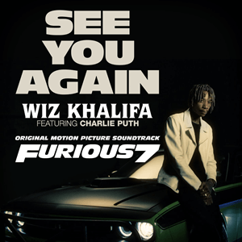

It's been a long day without you, my friend
And I'll tell you all about it when I see you again
We've come a long way from where we began
Oh, I'll tell you all about it when I see you again
When I see you again
Damn, who knew?
All the planes we flew, good things we been through
That I'd be standing right here talkin' to you
'Bout another path, I know we loved to hit the road and laugh
But something told me that it wouldn't last
Had to switch up, look at things different, see the bigger picture
Those were the days, hard work forever pays
Now I see you in a better place, uh
How can we not talk about family when family's all that we got?
Everything I went through, you were standing there by my side
And now you gon' be with me for the last ride
It's been a long day without you, my friend
And I'll tell you all about it when I see you again (I'll see you again)
We've come a long way (yeah, we came a long way)
From where we began (you know where we started)
Oh, I'll tell you all about it when I see you again (let me tell you)
When I see you again
Oh, oh
Ooh (yeah)
First, you both go out your way and the vibe is feeling strong
And what's small turned to a friendship, a friendship turned to a bond
And that bond will never be broken, the love will never get lost
And when brotherhood come first, then the line will never be crossed
Established it on our own when that line had to be drawn
And that line is what we reached, so remember me when I'm gone
How can we not talk about family when family's all that we got?
Everything I went through, you were standing there by my side
And now you gon' be with me for the last ride
So let the light guide your way, yeah
Hold every memory as you go
And every road you take
Will always lead you home, home
It's been a long day without you, my friend
And I'll tell you all about it when I see you again
We've come a long way from where we began
Oh, I'll tell you all about it when I see you again
When I see you again (oh, uh)
Yeah-yeah (oh, yeah, ooh, yup)
When I see you again (yup, uh)
See you again (oh, yeah), yeah-yeah (oh, yeah), oh-oh (yeah)
Ooh (uh-huh)
When I see you again (yup)